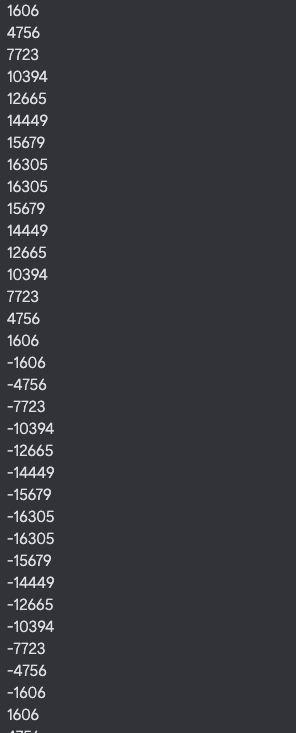
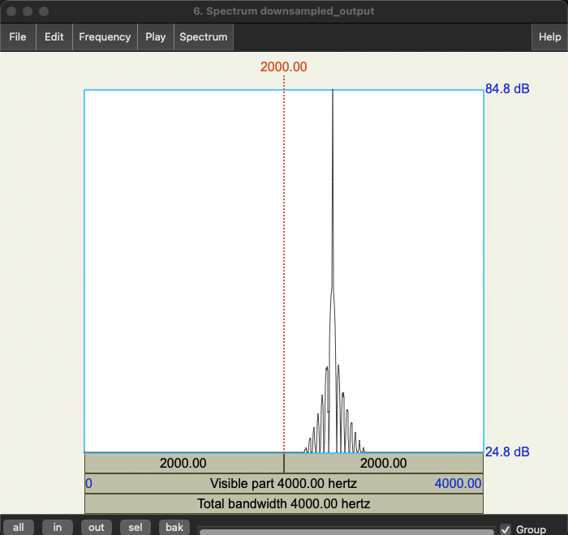
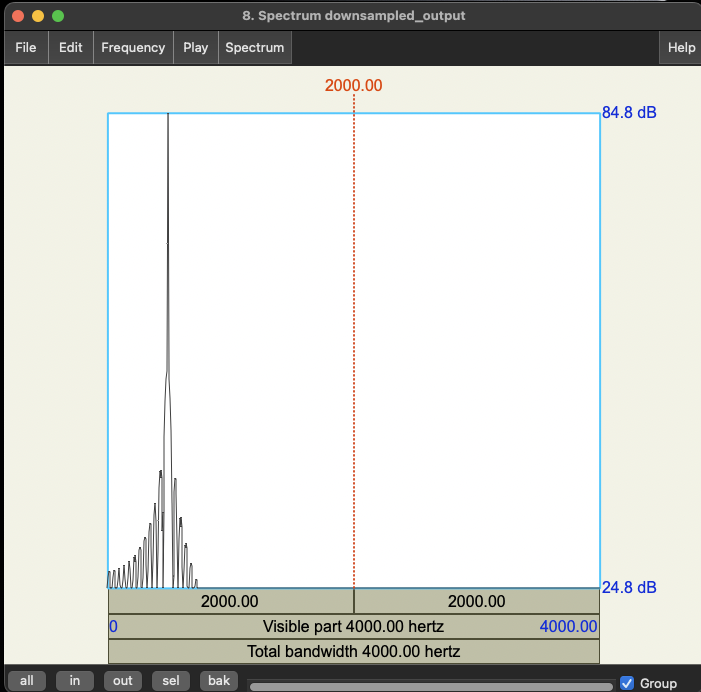
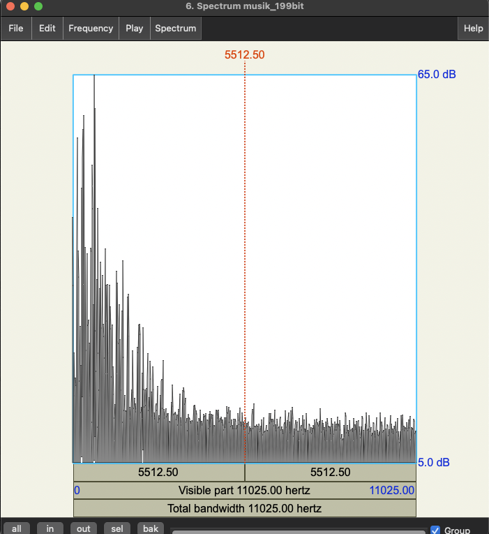
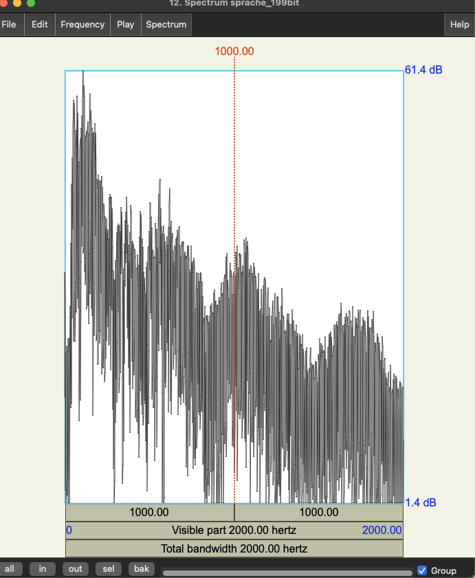

sine_lo06_Spektrum.png:

sine_hi02_Spektrum.png:

Musikaufnahme
The File: ./audio/musik_19.wav
IO State: READING
Headerausgabe
Channels: 2
Frames: 221277
Sample Rate: 44100
Valid Bits: 16
Bytes per sample: 2
Sprachaufnahme
The File: ./audio/sprache_19.wav
IO State: READING
Headerausgabe
Channels: 2
Frames: 40488
Sample Rate: 8000
Valid Bits: 16
Bytes per sample: 2
Die Audio-Dateien haben unterschiedliche Abtastfrequenzen, da Musik eine breitere Bandbreite von Frequenzen enthält und daher eine höhere Abtastfrequenz erfordert, während für Sprache eine niedrigere Abtastfrequenz ausreicht, da der Frequenzbereich der menschlichen Sprache (400-4000 kHz) begrenzt ist.
Channels = Kanäle (mono/stereo)
Frames = Gesamte Anzahl an Frames
Sample Rate = Abtastrate/Abtastfrequenz
Valid Bits = Auflösung
Bytes per Sample = Anzahl der Abtastwerte der Amplitude
Formel: fa * N * K
(fa: Abtastfrequenz, N: Auflösung in bit, K: Anzahl Kanäle)
Bitrate für Musikaufnahme:
musik_19: 2(Channels) * 44100(Sample Rate) * 16(Valid Bits) = 1411200 Bit/s
Bitrate für Sprachaufnahme:
sprache_19: 2(Channel) * 8000(Sample Rate) * 16(Valid Bits) = 256000 Bit/s
sine_hi02.wav:
Die Frequenz ergibt sich aus der Anzahl der Samples pro Schwingung (Periode) und der Sampling-Frequenz.
Frequenz für eine Sinus-Schwingung berechnen:
f = 16000 Hz / 32 = 500 Hz
sine_lo06.wav:
Frequenz für eine Sinus-Schwingung berechnen:
f = 16000 Hz / 8 = 2000 Hz
sine_lo06_Spektrum.png:
sine_hi02_Spektrum.png:
Das Abtasttheorem besagt, dass, um ein analoges Signal korrekt zu digitalisieren, es mit einer Frequenz abgetastet werden muss, die mindestens doppelt so hoch ist wie die höchste Frequenzkomponente des Signals. Mit anderen Worten: die Abtastrate muss mindestens doppelt so hoch sein wie die Bandbreite des Signals. Wenn das Abtasttheorem nicht befolgt wird, können Fehler auftreten, die als Faltungsverzerrungen bekannt sind und nicht rückgängig gemacht werden können.
Mathematisch ausgedrückt lautet das Theorem:
Es gilt f(a) > 2 * f(max)
wo F(a) die Abtastrate und F(max) die höchste Frequenzkomponente des Signals ist.
Wenn das Abtasttheorem nicht eingehalten wird, kommt es zum sogenannten Aliasing.
Der Grenzfall, für den das Abtasttheorem gerade noch gilt, tritt auf, wenn die Abtastrate gerade doppelt so hoch ist wie die höchste Frequenzkomponente im Signal. Dies wird auch als Nyquist-Frequenz bezeichnet.

Das Signal wird normalerweise durch einen Tiefpassfilter vorbehandelt. Durch den Einsatz des Tiefpassfilters werden alle Frequenzen ab fa/2 entfernt um Aliasing-Verzerrungen zu vermeiden
Code:
for (int i=0; i < samples/2;i++) {
readWavFile.sound[i] = readWavFile.sound[i * 2];
}
sampleRate /= 2;
samples /= 2;
numFrames /= 2;
Beim Downsampling einer Sprachdatei wird die Abtastfrequenz reduziert, indem einige der ursprünglichen Abtastwerte entfernt werden. Dadurch gehen Details in den höheren Frequenzbereichen verloren, was zu einem weniger klaren Klang führt. Zudem können Aliasing-Effekte auftreten, wenn Frequenzen über der Hälfte der neuen Abtastfrequenz liegen, was zu Verzerrungen führt. Insgesamt führt das Downsampling zu einem Verlust an Klangqualität, da wichtige Informationen aus der Datei entfernt werden
sinehi02down.png :
sinelo06down.png :
Bei 16Bit gibt es 2^16 = 65536 und bei 8 Bit 2^8 = 256 darstellbare Amplitudenwerte
int reduced_bits = 1;
for (int i=0; i < samples;i++) {
readWavFile.sound[i] /= Math.pow(2,reduced_bits);
readWavFile.sound[i] *= Math.pow(2,reduced_bits);
}
musik_191bit.wav:
musik_195bit.wav:
musik_199bit.wav:
Die hörbare, deutliche Verschlechterung der Audioqualität tritt bei einer Bitanzahl von 9 Bit auf.
sprache_191bit.wav:
sprache_195bit.wav:
sprache_199bit.wav:
Mit zunehmender Bitzahl wird der Klang undeutlicher bis 10 bit ungefähr
Durch die Bitreduzierung entstehen Quantisierungsgeräusche. Diese sind manchmal als Knacken, Klirren oder Rauschen wahrzunehmen. Die Quantisierungsgeräusche treten nur auf, wenn ein Signal mit Informationen (Sprache/Musik) vorliegt. Je höher die Reduzierung, desto stärker werden die Quantisierungsgeräusche.
int reduced_bits = 1;
short[] org = new short[samples];
for (int i=0; i < samples;i++) {
org[i] = readWavFile.sound[i];
readWavFile.sound[i] /= Math.pow(2,reduced_bits);
readWavFile.sound[i] *= Math.pow(2,reduced_bits);
readWavFile.sound[i] -= org[i];
readWavFile.sound[i] *= Math.pow(2,(16 - reduced_bits - 1));
}
Sprache Differenzsignal bei einer Bitreduzierung um 1 Bit:
Musik Differenzsignal bei einer Bitreduzierung um 1 Bit:
Bei einer Bitreduzierung um 10 Bit, ist ein deutlisches störendes Rauschen zu erkennen Die dazugehörigen Differenzsiganle sind folgende:
Sprache Differenzsignal bei einer Bitreduzierung um 9 Bit:
Musik Differenzsignal bei einer Bitreduzierung um 9 Bit:

Bei einer Reduktion um 1 bit ist das Differenzsignal ein starkes Rauschen. Bei zunehmender Bitreduktion wird das Differenzsignal dem ursprünglichen Signal ähnlicher.